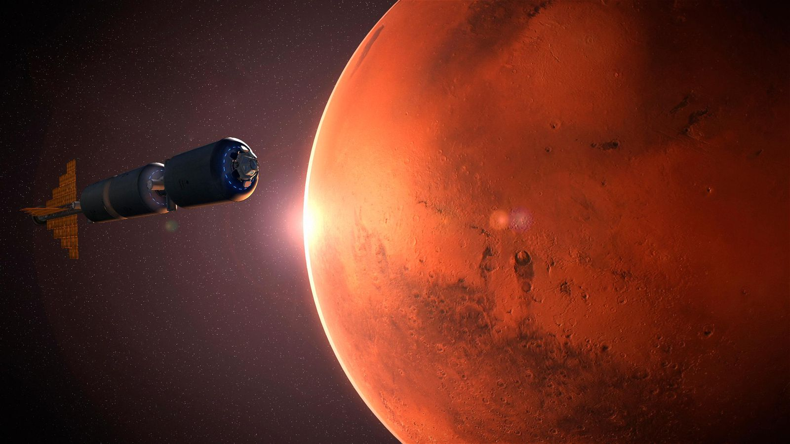

Does Mars have its own North Star?
With all the progress toward putting a human on Mars, I was wondering: What is the North Star for someone on Mars?

On Earth, the North Star is defined as the star toward which Earth’s north rotational pole points. Currently, that star is 2nd-magnitude Polaris, located in Ursa Minor — although it’s worth noting that Earth’s north rotational pole, also called the North Celestial Pole, doesn’t point exactly to this star. Rather, Polaris is about 40' from the North Celestial Pole, but because it’s relatively bright and very close to the pole, we call it the North Star. So, what about Mars’ north rotational pole? It turns out that on Mars, the North Celestial Pole falls in a region of the sky located in the constellation Cygnus the Swan. (Mars is close enough to Earth that the sky appears virtually identical to that on our planet, with all the stars and constellations in the same configurations.) Just like on Earth, there’s no star directly above the pole, but again within about 40' is the magnitude 5.8 star HD 201834. But such a faint star, which is nearly 40 times dimmer than Polaris, would be barely visible — if at all — even to those with extremely good eyesight under extremely good conditions. So, for all intents and purposes, humans on Mars would not have a bright, easily visible North Star to guide them. Under ideal conditions or with binoculars or a telescope, however, they could use HD 201834 as their martian North Star.
Source: Astronomy.com
Back to News